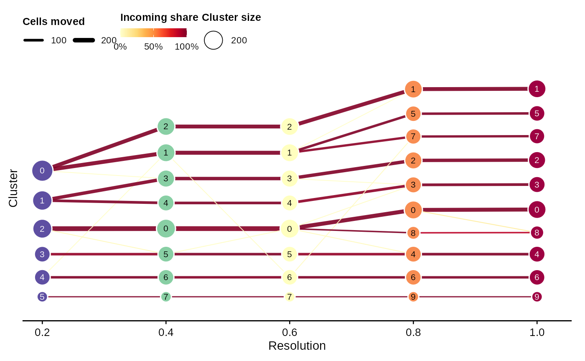
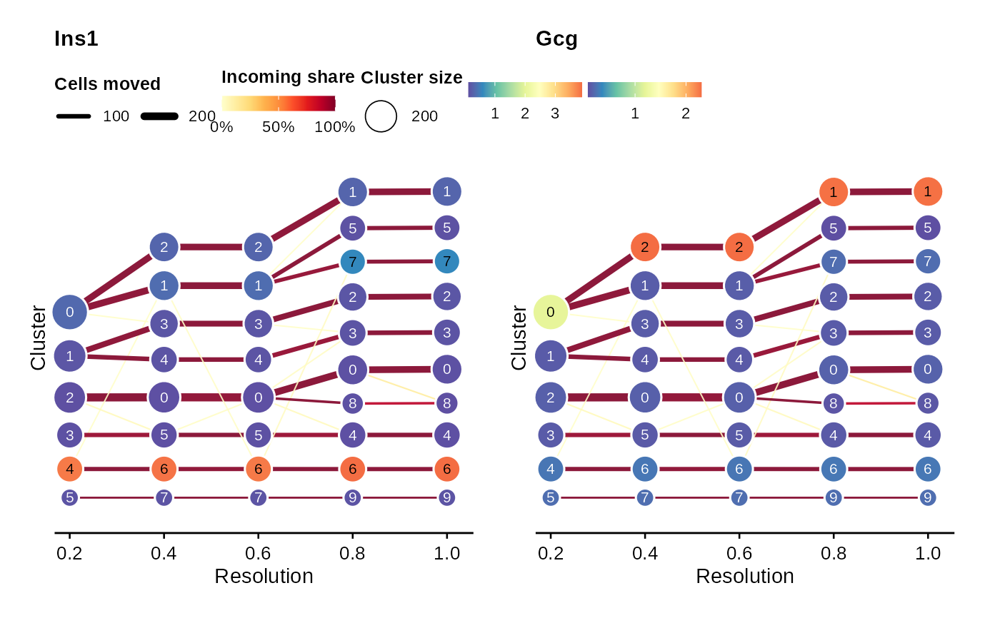

Visualize how cells move between clusters across multiple Seurat clustering
resolutions. In the default direction, nodes are bottom-aligned so the tree
expands from lower left to upper right; the direction can be reversed or
transposed. Automatically detected resolutions are ordered numerically;
explicit cluster_cols keep the supplied order.
Usage
ClusterTreePlot(
object,
cluster_cols = NULL,
prefix = NULL,
resolutions = NULL,
features = NULL,
assay = NULL,
layer = "data",
edge_threshold = 0,
node_palette = "Spectral",
node_palcolor = NULL,
edge_palette = "YlOrRd",
edge_palcolor = NULL,
node_size = c(4, 8.5),
edge_size = c(0.35, 2),
label = TRUE,
label.size = 2.8,
label.fg = "auto",
title = NULL,
subtitle = NULL,
xlab = "Resolution",
ylab = "Cluster",
legend.position = "auto",
theme_use = "theme_scop",
theme_args = list(),
combine = TRUE,
ncol = NULL,
return_data = FALSE,
verbose = TRUE,
family = "Arial",
direction = c("left-to-right", "right-to-left", "top-to-bottom", "bottom-to-top"),
srt = NULL
)Arguments
- object
A
Seuratobject.- cluster_cols
Metadata columns containing clustering results at different resolutions. If
NULL, columns generated bySeurat::FindClusters(resolution = c(...))are detected automatically.- prefix
Optional prefix used to filter automatically detected clustering columns, for example
"RNA_snn".- resolutions
Optional numeric vector used to filter automatically detected resolutions.
- features
Features to plot: a character vector or a named list of assay gene names or numeric metadata columns.
- assay
Assay to use.
NULLuses the default assay.- layer
Assay layer to use.
- edge_threshold
Minimum incoming proportion required to draw an edge. Edges below this threshold are still available when
return_data = TRUE.- node_palette, node_palcolor
Palette used for node colors.
- edge_palette, edge_palcolor
Palette used for edge colors.
- node_size
Numeric range used for node sizes.
- edge_size
Numeric range used for edge widths.
- label
Whether to draw cluster IDs inside nodes.
- label.size, label.fg
Size and color of cluster-ID labels.
label.fg = "auto"chooses black or white for each node from its fill.- title
Plot title.
NULL(the default) hides the redundant overall cluster-tree title; feature names are still shown as panel subtitles.- subtitle
Optional plot subtitle. When features are supplied and
subtitle = NULL, the feature or feature-set name is used.- xlab, ylab
Axis titles.
- legend.position
The position of the legend. The default is
"auto": horizontal trees place a compact guide row above the panel, aligned to the starting side, while vertical trees place guides on the right. Use"inside"to force an in-panel legend.- theme_use, theme_args
Plot theme and additional theme arguments.
- combine
Combine plots with patchwork.
combine = FALSEreturns a list of ggplots.- ncol
Number of columns of the combined plot.
- return_data
Whether to return plot data along with the plot.
- verbose
Whether to print messages.
- family
Font family used for node labels, axes, titles, and legends.
- direction
Tree direction:
"left-to-right","right-to-left","top-to-bottom", or"bottom-to-top".- srt
Deprecated alias for
object; supply exactly one of the two. It will be removed in scop 1.0.0.
Value
A ggplot, patchwork, list of ggplot objects, or a list with
plot data when return_data = TRUE.
Examples
Restored example output generated on 2026-10-13 from SCOP 53ed7e08f. These historical examples have not been revalidated against the current release. Current usage and arguments are documented above.
data(pancreas_sub)
pancreas_sub <- RunStandardWorkflow(pancreas_sub, verbose = FALSE)
#> ℹ [2026-10-13 16:04:22] Skip `log1p()` because `layer = data` is not "counts"
pancreas_sub <- Seurat::FindNeighbors(
pancreas_sub,
reduction = "Standardpca",
dims = 1:20,
verbose = FALSE
)
pancreas_sub <- Seurat::FindClusters(
pancreas_sub,
resolution = seq(0.2, 1, by = 0.2),
verbose = FALSE
)
ClusterTreePlot(pancreas_sub)
#> ℹ [2026-10-13 16:04:30] Multiple clustering prefixes detected. Use "RNA_snn" for `ClusterTreePlot()`. Pass `prefix` to choose another prefix.

ClusterTreePlot(
pancreas_sub,
features = c("Ins1", "Gcg")
)
#> ℹ [2026-10-13 16:04:30] Multiple clustering prefixes detected. Use "RNA_snn" for `ClusterTreePlot()`. Pass `prefix` to choose another prefix.
